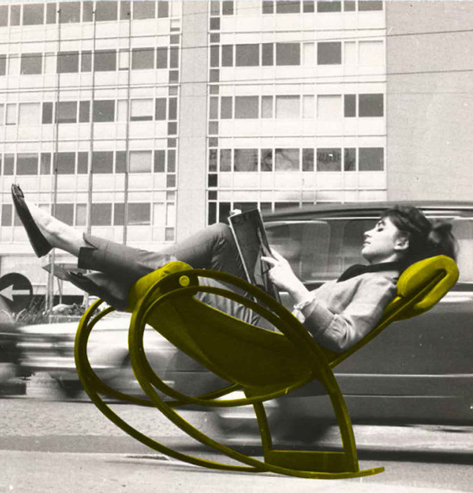

Gaetana Aulenti fue una arquitecta italiana nacida en Palazzolo dello Stella, el cuatro de diciembre de 1927. Aulenti es una de las pocas mujeres que han dejado una profunda huella, a veces polémica, en la arquitectura internacional, así como en la escenografía teatral y en el diseño industrial.
Después de graduarse en la Escuela Politécnica de Arquitectura de Milán en 1954, Aulenti se dio a conocer en un amplio espectro de trabajos contemporáneos que iban desde la arquitectura hasta el diseño industrial. Durante casi una década, Aulenti trabajó como diseñadora gráfica y, de 1955 a 1965, trabajó como parte del equipo editorial de la influyente revista de diseño Casabella con Ernesto Nathan Rogers de quien absorbió por completo su tutela arquitectónica y de quien se dijo que fue la influencia más significativa de su vida.
A lo largo de su carrera fue una diseñadora industrial de gran éxito, creando muchas piezas para Knoll, Zanotta, Kartell, Artemide y otras empresas. Aulenti cubrió todos los aspectos de su oficio y expandió sus límites diseñando escenografías para el teatro (sobre todo con Luca Ronconi), se interesó en la decoración de interiores a raíz de trabajar en la revista "Casabella" y se dedicó a la enseñanza. La mayoría de los encargos de arquitectura de Aulenti fueron para museos (el Musée d'Orsay, el Centro Pompidou, el Museo de Arte Asiático de San Francisco).
"La arquitectura es una profesión reservada mayormente a los hombres, pero yo siempre hice como si no me hubiese dado cuenta y ellos me respondieron de la misma manera", declaró en numerosas ocasiones con el humor y la inteligencia que la caracterizaban y que hicieron legendaria su presencia en eventos y exposiciones donde brillaba, además, por su belleza y su elegancia, mantenidas intactas en el tiempo.
Su última aparición pública fue el 16 de octubre de 2012 cuando retiró el premio a su carrera que le otorgó la Trienal de Milán. Falleció el 31 de octubre de 2012 a los 84 años después de un largo periodo de enfermedad.
NEOLIBERTY

Entre sus obras destacan numerosas intervenciones de renovación y rehabilitaciones en edificios de valor histórico. El contexto del Milán de los años cincuenta era particular, eran los años de la reconstrucción y la capital lombarda había sufrido en carne propia los destrozos de la segunda guerra mundial, estando toda la ciudad dedicaba a recuperarse. La arquitectura italiana se dedicaba a la investigación de la recuperación histórica y cultural de los valores arquitectónicos del pasado y el entorno construido existente. Estas expresiones arquitectónicas se materializaron en la corriente Neoliberty.
El nombre de Neoliberty hace alusión al modernismo italiano, llamado Liberty en ese país por estar inspirado en la obra de Arthur Liberty. Representado principalmente por Gae Aulenti, Franco Albini, Vittorio Gregotti y Carlo Mollino, se inspiran tanto en ese precedente como en el pop art. Su arquitectura es de tipo revivalista, con la pretensión de unirse con el modernismo Art Nouveau, por oposición a la arquitectura racionalista practicada hasta entonces. En el terreno del diseño y de la decoración de interiores, destacan su mobilario y sus lámparas de trazado curvilíneo.
Durante el periodo que Aulenti trabajó en la revista Casabella, desde sus páginas propuso el Neoliberty como alternativa al racionalismo imperante en las convenciones arquitectónicas de la época, dando lugar a piezas como la conocida mecedora Sgarsul o las sillas de jardín Locus Solus.
TRABAJOS
Como muchos de sus contemporáneos, Aulenti diseñó varias series de muebles en toda la década de 1960 para la tienda La Rinascente y, más tarde, diseñó muebles para Zanotta (donde creó dos de sus piezas más conocidas: la silla plegable Abril, hecha de acero inoxidable y la mesa en acero para jardín Sanmarco 2571).
En 1965 diseñó y creó su famosa lámpara de mesa Pipistrello (murciélago), concebida para un sitio específico de la Sala de exposiciones de Olivetti.
Realizó muchos diseños de interiores para clientes corporativos como Fiat; Banca Commerciale Italiana; Pirelli; Olivetti y Knoll International. Y productos de diseño para Poltronova; Vela; Ideal Standard; Louis Vuitton y Artemide.
De entre sus de proyectos de arquitectura, destacan la reforma del Museo d’Orsay (París 1980-1986), la reforma del Palazzo Grassi (Venecia, 1985), el Pabellón de Italia en la Expo Universal de 1992 en Sevilla y la reforma del Palacio Nacional de Montjuic (Barcelona, 1985). Además, Aulenti trabajó ocasionalmente como escenógrafa para Luca Ronconi y diseñó varias tiendas para el diseñador de moda Adrienne Vittdini, llegando a crear para él hasta los maniquíes.
Gae Aulenti ha sido galardonada con varios títulos y premios en numerosas ocasiones:
Fue nombrada Miembro honorario del Instituto Americano de Arquitectura en 1990
En 1991 recibió el Premio Imperial otorgado por la Japan Art Association (Tokio, 1991).
Recibió el título honorario en Bellas Artes en la Rhode Island School of Design (Providence, 2001).
En 2007 le fue otorgado ex aequo el Marble Architectural Awards 2007 junto a Renzo Piano.
En 2012, recibió la Medalla de Oro de la Trienal de Milán por su trayectoria artística en reconocimiento a su posición como uno de los maestros del diseño italiano junto a Vittorio Gregotti y a Maria Giuseppina Grasso Cannizzo.
Además le fueron concedidos los siguientes honores:
Caballero de la Legión de Honor (Francia), 1987
Medalla de oro Benemérito de la cultura y del arte, 28 de marzo de 1994.